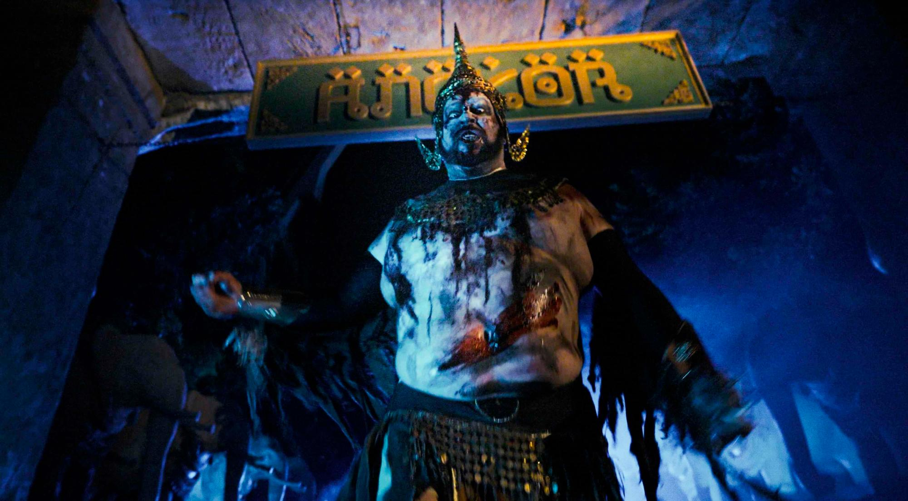
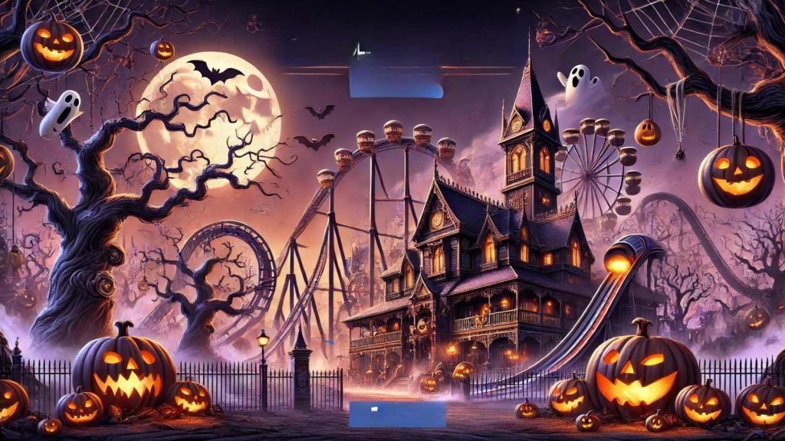
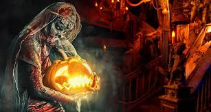

Atrás quedan los gritos de los que intentaron escapar, solo el eco de sus pisadas y jadeos permanece en los pasillos sombríos de esta aterradora morada. Al cruzar estas puertas, deberán abrirse paso por corredores angostos, habitaciones llenas de sombras que parecen observarte, y esquinas que esconden lo desconocido. No estarán solos, no, porque la criatura acecha, sigilosa y hambrienta, oliendo el miedo, aguardando el momento exacto para reclamar su siguiente víctima.

Una vez que los arneses se cierran, ya no hay marcha atrás. Las sombras comienzan a susurrar, y el rugido del viento es acompañado por risas inquietantes. A medida que ascienden hacia la cima, las luces se apagan y sientes cómo una presencia helada se desliza entre los asientos, justo detrás de ti, rozándote como un suspiro de ultratumba. De repente, ¡un giro inesperado! El vagón parece cobrar vida propia, zambulléndose en una carrera frenética, desafiando las leyes de la física y los gritos de los desafortunados pasajeros.

Su única esperanza es encender todas las Calabazas de la Vida. Cada calabaza iluminada actúa como un escudo de protección, impidiendo que el espíritu de la bruja se acerque. Pero cuidado: Morgana es astuta, y su risa siniestra retumbará en sus oídos mientras buscan a tientas en la penumbra. A medida que avanzan por cada sala, sentirán cómo la temperatura cae y verán sombras moverse donde no debería haber ninguna. El tiempo corre, y la oscuridad crece cada segundo…